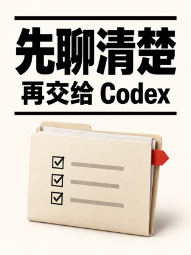
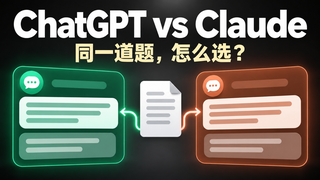

B05-A · 极简编辑 · 3:4 · 无人物先聊清楚再交给 Codex看设计依据吸收白底黑字与编辑式留白；移除两个人物，改成开发说明这个单一主对象。PNG 原图 · JPEG
B06-B · 发布会实测 · 16:9 · 原创人物AI 编程实测从需求到原型看设计依据吸收真人与可展示实物的体验证据；把证书换成原型电脑，改成原创亚洲男讲解者与工作室构图。PNG 原图 · JPEG
B07-A · 双阵营对比 · 16:9 · 无人物ChatGPT vs Claude同一道题，怎么选？看设计依据吸收绿与陶土两区和同等权重的对象；移除中间人物，加入同题输入卡，使用中立问题。PNG 原图 · JPEG
B09-A · 矩阵控制室 · 16:9 · 无人物多 Agent 调度一屏看清任务看设计依据取你提供的拼图第一行最右侧的矩阵结构；改为九格任务墙和无人物控制台，任务逻辑参考 C16-S2 与 C14-S2。PNG 原图 · JPEG